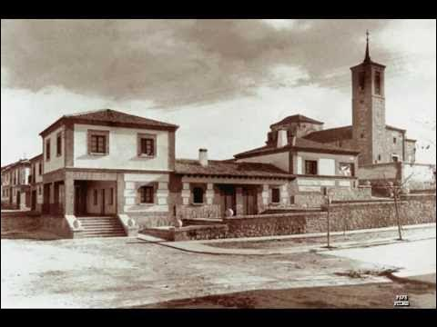

 Nací el 9 de octubre de 2002 en el Hospital La Paz de Madrid, aunque he vivido toda mi vida en Las Rozas, un municipio cercano a la capital. A pesar de que nací en Madrid, Las Rozas siempre ha sido mi hogar. Es un lugar tranquilo, con un ambiente muy familiar, perfecto para crecer rodeado de zonas verdes y con la ciudad de Madrid a un paso. Aquí he pasado la mayor parte de mi vida, entre amigos, la escuela y la familia, creando recuerdos que siempre llevaré conmigo.
Mis padres, Isabel Arroyo y Pedro Rincón, son también de Madrid. Ellos han sido siempre el pilar fundamental en mi vida, dándome una educación basada en los valores de esfuerzo, respeto y compromiso. Mi madre, Isabel, ha sido muy cercana y siempre se ha involucrado en todo lo relacionado con mi educación y mi bienestar. Mi padre, Pedro, ha sido un ejemplo de trabajo duro y dedicación, y gracias a su esfuerzo, siempre tuvimos lo necesario, aunque sin lujos, en casa. Mi familia ha sido siempre mi mayor apoyo, y sus enseñanzas son lo que más valoro.
Crecí en un ambiente muy normal de clase media, en un barrio residencial donde el ritmo de vida es tranquilo. Mi infancia fue bastante típica para un niño español de principios de los 2000. Recuerdo las tardes interminables jugando en los parques, montando en bici con mis amigos o practicando fútbol en el patio. En esos años, las tecnologías aún no dominaban tanto como ahora, por lo que gran parte de mi tiempo lo pasaba al aire libre, socializando con mis compañeros o simplemente disfrutando de los juegos tradicionales. No me faltaban las horas de lectura, tampoco. Siempre me gustó aprender, aunque no era un niño excesivamente brillante, más bien me consideraba curioso y con ganas de entender las cosas que me rodeaban.
Fui al Colegio Vicente Aleixandre, también en Las Rozas, donde pasé desde la primaria hasta el final de la educación primaria. Como niño, no destacaba especialmente por ser el más brillante en clase, pero sí era un estudiante que se esforzaba y le gustaba aprender. Mis profesores siempre me destacaron por ser responsable y sociable, dos características que creo que definieron gran parte de mi carácter. En los recreos, pasaba mucho tiempo jugando al fútbol con mis amigos, pero también me gustaba hacer juegos de mesa o compartir conversaciones con ellos.
Cuando terminé la primaria, di el salto al IES Las Rozas 1, donde continué mis estudios secundarios. Esta etapa fue, sin duda, un cambio importante en mi vida. Fue el momento de la adolescencia, con todos los altibajos emocionales y sociales que conlleva. En el instituto, empecé a interesarme más por materias como las ciencias y la tecnología, áreas que comenzaron a capturar mi atención y que me ayudaron a orientar mis estudios hacia lo que más me gusta. Aunque en esa etapa me resultó más difícil mantener un equilibrio en cuanto a la vida social y los estudios, fue donde realmente empecé a darme cuenta de lo que me apasionaba y lo que quería hacer en el futuro.
Mi vida como niño de clase media en España fue bastante normal para la época en la que nací. Aunque la crisis económica de 2008 afectó a muchas familias, mis padres siempre lograron que nunca nos faltara lo esencial. Recuerdo las navidades, los cumpleaños y las vacaciones como momentos especiales, pero no por los regalos o los viajes, sino por el tiempo que compartíamos como familia. Mis padres siempre me enseñaron a valorar las pequeñas cosas y a trabajar para conseguir lo que uno quiere.